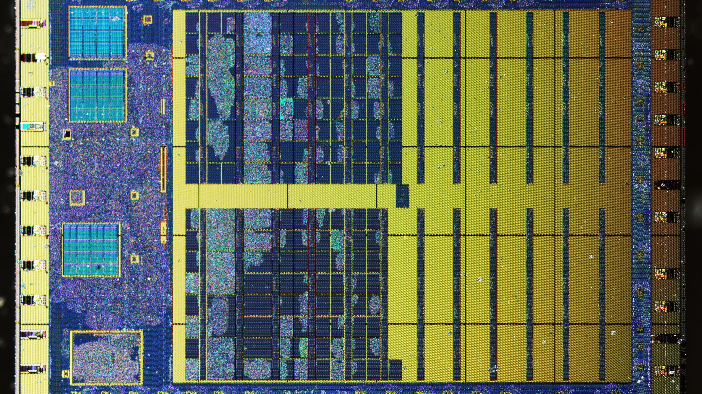

Silicon photomicrograph of integrated circuit microarchitecture analyzed for unauthorized IP reverse-engineering.In advanced microelectronics, synthetic biology, clean tech, and autonomous systems, corporate value resides almost entirely in proprietary intellectual property, algorithmic trade secrets, and chemical formulations. However, global geopolitical rivalries have intensified industrial espionage to unprecedented levels, with state-backed competitors deploying aggressive tactics to acquire Western R&D breakthroughs without the associated development costs.
Traditional enterprise data loss prevention (DLP) solutions are ill-equipped to counter modern industrial espionage. Today’s threat actors coordinate departures of key research personnel, exploit sub-tier supply chain hardware vulnerabilities, and leverage covert exfiltration channels that evade standard firewall telemetry. Protecting high-value R&D requires a proactive, multidisciplinary counter-espionage framework uniting physical, digital, and legal investigative tradecraft.
Table of Contents
- 1. The Industrial Espionage Playbook: Insider Collusion & Talent Poaching
- 2. Supply Chain Interception: Detecting Firmware Backdoors & Hardware Trojans
- 3. Digital Forensics on Covert Exfiltration Channels & Staging
- 4. Securing Ex Parte Search Orders & Court-Admissible Forensic Preservation
- 5. The Veritas DeepTech Shielding Framework
1. The Industrial Espionage Playbook: Insider Collusion & Talent Poaching
Most devastating trade secret breaches do not begin with external network breaches; they originate with trusted senior researchers and engineers. Competitor entities—often backed by foreign state subsidies—target critical personnel with undisclosed foreign talent program grants, lucrative offshore consulting agreements, or equity in shadow startup entities.
Prior to resigning, departing engineers systematically download proprietary CAD files, source code repositories, and process recipes, storing them on encrypted personal storage or cloud repositories disguised as benign administrative files.
2. Supply Chain Interception: Detecting Firmware Backdoors & Hardware Trojans
In deep-tech manufacturing environments, supply chains represent a critical attack surface. Adversaries infiltrate third-party tooling suppliers, outsourced testing facilities, and specialized sub-assembly vendors to introduce modified firmware, unauthorized microcode revisions, or clandestine hardware taps into cleanroom diagnostic equipment.
Veritas hardware forensics specialists inspect physical integrated circuits, conduct bit-level firmware decompilation, and analyze electromagnetic emissions to confirm the absence of malicious telemetry transmitters in mission-critical fabrication machinery.
Veritas Strategic Advisory: Protecting Core R&D Assets from Exfiltration
Chief Technology Officers, General Counsel, and Head of R&D should implement the following defensive controls:
- Implement zero-trust air-gapped repositories for crown-jewel intellectual property with mandatory multi-party cryptographic authorization for bulk code downloads.
- Conduct proactive digital forensics on all laptops, mobile devices, and cloud access logs of key technical personnel immediately upon notice of resignation.
- Establish contractual audit rights and forensic verification protocols across Tier-1 and Tier-2 engineering suppliers in sensitive jurisdictions.
3. Digital Forensics on Covert Exfiltration Channels & Staging
Sophisticated insiders conceal their exfiltration activities using advanced anti-forensic techniques: steganographically encoding architectural schematics within image files, fragmenting archives across ephemeral cloud containers, and wiping shellbag and USB event logs.
Our digital forensic examiners specialize in deep NTFS artifact parsing, unallocated cluster carving, and link file (.lnk) correlation to establish clear proof of unauthorized data staging, volume mounting, and transfer to adversary-controlled destinations.
4. Securing Ex Parte Search Orders & Court-Admissible Forensic Preservation
In commercial trade secret litigation, speed is paramount. If opposing parties receive advance notice of legal action, proprietary data can be irrevocably deleted, and physical prototypes relocated across borders.
Veritas works seamlessly with outside legal counsel to prepare evidentiary affidavits supporting applications for ex parte search orders (such as Anton Piller orders in England & Wales, or civil seizure orders under the U.S. Defend Trade Secrets Act), executing court-supervised image captures at competitor facilities.
5. The Veritas DeepTech Shielding Framework
Our multidisciplinary trade secret defense service encompasses three robust stages:
- Crown Jewel Identification & Vulnerability Mapping: Classifying proprietary IP assets, auditing access control architectures, and identifying vulnerable vendor touchpoints.
- Proactive Behavioral & Digital Telemetry: Monitoring anomalous data movement, unauthorized code compilation, and clandestine communication with competitor recruiters.
- Rapid Incident Forensics & Legal Enforcement: Executing immediate forensic preservation, reverse-engineering exfiltrated prototypes, and preparing trial-ready expert testimony.
"In the semiconductor and DeepTech races, years of breakthrough engineering and hundreds of millions in capital can evaporate overnight if trade secrets bleed into rival hands. Decisive forensic action within 48 hours is the difference between preserving enterprise value and total technological compromise."
About Kavita Raman
Kavita directs cross-border trade secret theft investigations, cleanroom intellectual property audits, and hardware supply chain forensics. She works alongside multinational patent litigation teams to preserve forensic evidence, detect insider collusion, and secure ex parte civil seizure orders.